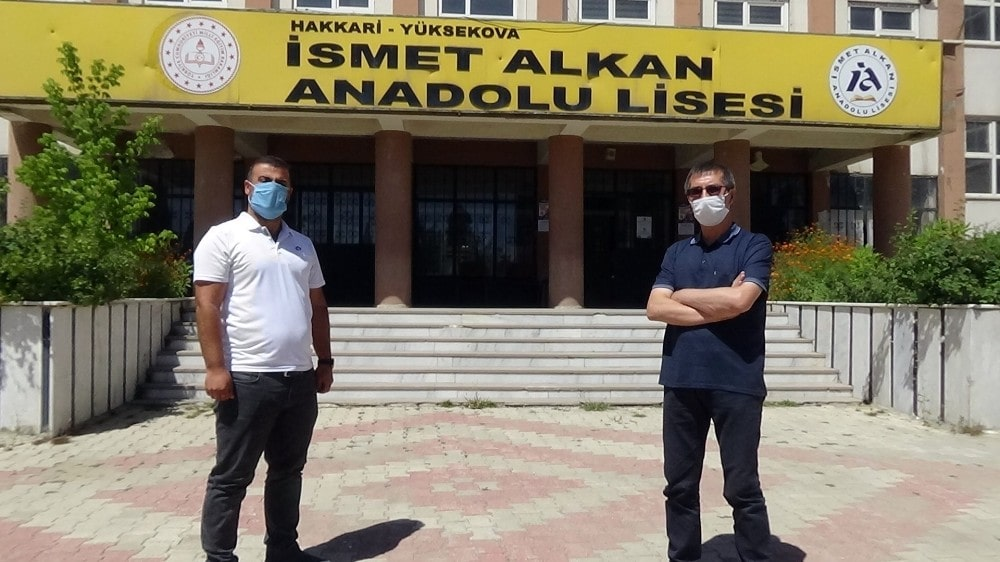

31 Ağustos 2020 - Sabah
Hakkari’nin Yüksekova ilçesinde 24 yıldır görev yapan Aksaraylı Orhan Yıldız adlı İngilizce öğretmeni, her sene olduğu gibi yine sınıfının tamamını üniversiteli yaparak büyük başarıya imza attı.İlçenin İpekyolu Caddesi üzerinde bulunan İsmet Alkan Anadolu Lisesinde İngilizce öğretmeni olarak görev yapan Orhan Yıldız, kendi sınıfının öğrencileriyle birebir ilgilenerek, onların gelişimine katkı sunmak için hiçbir fedakârlıktan kaçınmıyor. İlçede 24 yıldır yaşayan Aksaraylı Orhan Yıldız, bir Yüksekovalıdan fazla emek saf ederek, çalıştığı okullarda her zaman için aranan gözde öğretmenlerden olmayı başardı.
Yüksekova’da bir süper öğretmen
İlçede büyük başarılara imza atan İngilizce Öğretmeni Orhan Yıldız, öğrencilerini hiçbir sıkıntı yaşamadan üniversiteye yerleştirmeyi başardı. İlçede ‘Süper Öğretmen’ olarak bilinen Orhan Yıldız, “İlk görevimi Edirne Uzunköprü ilçesinde yaptım ve daha sonra gönüllü olarak Hakkari’ye tayin istedim. Bu 24. Yılımdır. Yüksekova’da Allah nasip ederse çalışmalarıma devam edeceğim. Ben buraya gönüllü geldim. Gönlümden geçen; insanlarımız mutlaka okumalı, eğitim almalı, aydınlanmalı, bilinçlenmeli diye düşünüyordum. Ben buraya bu maksatla geldim. Geldikten sonra burada insanımızın eğitime verdiği önemi, okuma aşkını, eğitim istekliğini, saygısını, desteğini, yardımını gördüm. Bu da bize destek oldu, şevk verdi, heves verdi. Zaman içinde ufak ufak nasıl katkı yapabiliriz diye dil sınıfı olarak benim tarafıma düştü. Ben İngilizce öğretmeni olarak kendimi şu şekilde tanımlıyorum. Biz her gün Allah’a çok şükür başarılı oluyoruz. Bu başarıda bakış açısı, duruş ve eğitim anlayışı önemli. Ben her şeyden öte çok samimi bir insanım, çünkü gerçekten gençlerimizin okumasına her yönüyle katkı sağlamak için elimden geleni yaparım. Biz toplum olarak hep okumalıyız, çünkü gelecek nesil hepimizin eseri olacak. Ben bir İngilizce öğretmeni olarak yüzde 100 başarı göstererek kendi sınıfımın tamamını üniversiteye gönderiyorum. Allah’a binlerce şükürler olsun. İnşallah Hakkari’de, Yüksekova’da veya Türkiye’nin her yerine örnek olabilirsek mutlu oluruz. Ayrıca bu vesileyle ben Türkiye’nin her yerindeki meslektaşlarıma Hakkari’ye, Yüksekova’ya gönül rahatlığıyla, huzurla, arzuyla gelmelerini tavsiye ederim. Burayı tanıdıklarında eminim asla ayrılmak istemeyecek” diye konuştu.
Orhan Hoca Yüksekova’nın eğitim değeridir
Okul Müdiresi Ayten Avcıoğlu ise 2017 yılından bu yana akademik başarılarının devam ettiğini ifade ederek, “O yıldan bu yana eczacı, diş hekimliği, doktor, hukuk fakültelerine girmiş öğrencilerimiz var. Okulumuz Hakkari’de il birincisi. Geçen yıl yapılan istatistiklere göre il genelinde sayısalda birinci ve ikinci olan öğrencilerimiz vardı. Dil sınıflarımıza gelirsek, yüzde 100 emin bir şekilde açıyoruz. Dil sınıfımızın başında Orhan Yıldız Hocamız bulunuyor. Orhan Yıldız sadece bizim okulun değil, tüm Yüksekova’nın eğitim değeridir. Kendisine minnettarım, yıllardır kendisi burada görev yapıyor. Burada 24. yılı hocamızın. Yaz tatiline rağmen tatile gitmez, sürekli öğrencileriyle zamanını geçirir. Tüm öğrencileri ile tek tek ilgileniyor ve bundan dolayı üniversite sınavlarında yüzde 100 başarı elde ediyoruz. Ona ne kadar teşekkür etsem, kelimeler kifayetsiz. Okulumuzdaki bütün eğitimci arkadaşlarımız olarak eğitimde başarının öncüsü olmak için elimizden geleni yapacağız’’ ifadelerini kullandı.
“Orhan Hoca sayesinde bende bir İngilizce öğretmeniyim”
Orhan Hocanın ilk öğrencilerinden olan Adnan Erkut ise “Bende İngilizce öğretmeniyim. Bir insanın hayatındaki en büyük şansı, iyi bir öğretmenle karşılaşmasıdır. Bende Orhan Hocamla Yüksekova Anadolu Lisesinde karşılaştım. Yaklaşık 18 yıl önce Yüksekova Anadolu Lisesinde bana İngilizceyi öğreten, İngilizceyi sevdiren 10’uncu sınıfta dil bölümünü bana sağlayan Orhan Hocamızdır. Her sene olduğu gibi bu senede Orhan Hocamız sınıfının tamamını üniversiteye gönderdi. Orhan Hoca emeğiyle, fedakârlığıyla, gayretiyle Yüksekova’ya gelmiş ender öğretmenlerimizdendir’’ şeklinde konuştu.
“Orhan Hoca sayesinde üniversiteyi garanti görüyoruz”
Öğrenci Yağmur Onaylı da, 9’uncu sınıfta hiç dil bölümüne geçmeyi düşünmediğini belirterek, “Orhan Hocayla tanıştım. Kendisini tanıdım, öğrencilerinden kendisiyle ilgili bilgi edindim. Daha sonra dil bölümüne gelmek için fikrim değişti. 11’inci sınıfta dil bölümüne başladım, baya heyecan vardı. Orhan Hoca hem maddi hem de manevi 11’inci sınıfta destek verdi bize. Daha sonra korona virüs nedeniyle okuldan ayrıldık. Evde bile Orhan Hocanın kesinlikle desteğini aldım. Onun desteği sayesinde kendi güvenimden ziyade, ona güvendik ve ona güvenerek 11’inci sınıfı ful çalışmakla geçirdim. Şükür hiç de pişman değilim, kendisinden de çok eminiz. Her sene olduğu gibi tüm öğrencileri üniversiteli oluyor. Bir Yüksekovalı öğrenci olarak kendisine teşekkür ediyorum’’ dedi.
Kaynak: Sabah